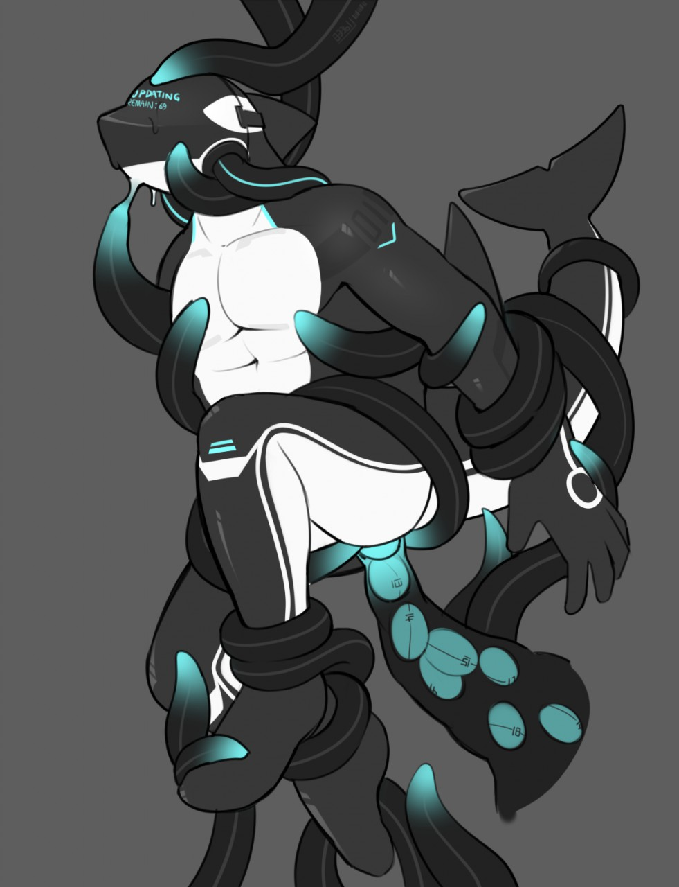

Introducing O-Suit 01
Written by TwistedSnakes
Illustrated by Qundium
Decro had always loved the ocean. Geared up in a thick, neoprene wetsuit and his trusty scuba set, the white wolf glided through the reefs of Bamoir. The brilliant sea opened up like a vast landscape of colours as he swam among the fishes and corals.
Suddenly, his ankle caught onto something. His heart skipped a beat; he was always fearful of damaging the fragile coral reefs. Instead of broken reefs, however, what he saw was a black tentacle reaching out through the corals and wrapping itself around his ankle.
A pesky octopus.
Decro tried to kick himself free but the tentacle refused to give. In fact, its vice-like grip seemed to be impossible for an octopus of its size.
"Come on," he thought as he tried to kick himself free, "Let go of me!"
But the tentacle only dragged him closer. Greeting him was a mass of tentacles with no body attached. Each of them was tipped with a luminescent blue that glowed in the water. Their wriggling had an unnatural motion to them, almost like they were mechanical limbs rather than organic ones. However, there was no time to pay attention to these details; the other tentacles were reaching out for him.
"No, no, no, no, no!" the wolf panicked, turning around and trying to swim away. A tentacle grabbed his free ankle and another one wrapped itself around his waist.
"Gah!" Decro gasped as he tried to pry them off him but to no avail: they were like flexible metal arms encased in a thick skin of rubber. What were machines like these doing here? But his train of thoughts was interrupted as they pulled the wolf back to face the mass of tentacles, making him shudder from its unearthly sight.
More tentacles grabbed his arms and chest, refusing to let him go. Another one tore his scuba mask and tank off him, submerging his face with seawater as he instinctively closed his eyes and held his breath.
"This is how I die," he thought. The cold embrace of the water depriving him of air until he let out his last breath.
But something warm was starting to engulf him. Decro opened his eyes and tried to make out the shapes through the water. A black liquid was seeping out from the tentacles and spreading all over his arms and legs.
Panic filled him again as he struggled and writhed. His energy was quickly depleting and he was running out of breath but he refused to be consumed by...whatever this creature was. Despite wearing a wetsuit, Decro could swear that he was feeling the rubbery material moving over his fur. It seemed to be...merging with his skintight neoprene suit.
B-but, that wasn't possible, right?
The black goo continued advancing up his legs and arms until it reached his torso. As it spread, the material solidified into a latex suit around his body. Some areas of the suit turned white as it did so, giving the appearance of stripes and seams going up his body.
Meanwhile, his crotch was covered in the rubber, wrapping his manhood in a tight bulge. His tail was also encased in the latex which thickened out behind him to form a tapered tail. At the same time, his abs and chest were soon covered in black and white rubber that hugged his body and brought out their curves.
What was going on?
Fins appeared on Decro's back, upper arm, and tail.
Wait...
The colours...the fins...
The goo was turning him into an ocra!
"Help..." he thought. His lungs were burning from holding in his breath.
Help...
The last of his breath escaped his lips, leaving him feeling light-headed. His vision was swimming even more than before.
He didn't want to die here.
Just as he was about to lose consciousness, the latex flowed up his neck and engulfed his head, turning his vision black. Suddenly, as if a switch had been turned on, Decro found that he could breathe again.
"Huh?" he thought, "What's going on?"
His vision slowly came back as a tinted black visor appeared in front of him. There was a sharp prick as something pierced his spine. A wave of sensations filled Decro's mind. It was as if new body parts were attached to him. He could feel the fins on his arms, back, and tail. He could even sense a fin on the back of his neck that he hadn't yet seen.
The sensation was weird. It was like his body was smoother and more streamlined. His head was in the shape of an orca, round and aerodynamic. In fact, a little too dynamic. The mask — now his new face — was totally seamless. There was no opening for his mouth, no sign of his eyes behind the tinted lenses.

Decro groaned in his mind. This was all very confusing. But the tentacles weren't done with him. Without warning, they began wrapping around him with renewed vigour. Two black tubes emerged from openings in his back and attached themselves to ports on either side of his head. The visor came to life and blue words appeared on it: "O-Suit Corporation".
Below that, the words "Begin dronification process" appeared.
Dronification?!
Decro tried to use every ounce of his energy to break free but the suit was faster: the spinal attachment immediately interrupted his neural impulses and his body hung limply in the water. A progress bar appeared in front of his vision.
0%
A numbness started to spread over his body.
25%
He tried to fight it. Focusing, he managed to break one arm free of the paralysis.
Yes!
With his free hand, he tried to pry the tubes at the side of his head off him.
50%
His fingers were starting to feel numb.
No!
The wolf could feel himself lose control of his new ocra form.
75%
It was almost as if he was only an observer trapped in his own body, unable to move, unable to talk.
Unable to even cry about his predicament.
100%
"Dronification completed," the suit announced, "Databanks not found."
Suddenly, something nudge against his tailhole. Decro wanted to struggle but that was out of the question. The prodding tentacle forced past his pucker and into him, pressing against his sensitive muscles. If he was able to, the wolf would've blushed from the arousal and embarrassment but the suit's neural connection kept him from doing anything. All he could do was watch as the tentacle filled out his insides.
"Data connection detected. Commencing ANALog data transfer."
Without warning, the tentacle in him pulsed as if something was pushing past his sphincter. Then another one. It was as if the tentacle was a tube, funnelling something round into him. The round objects exited the tentacle and pushed into his inner muscles.
It was filling him up with eggs of some sort!
The first data egg elongated within him and travelled through his body, sending a burst of pain that blinded his vision. As it did so, new information started filling Decro's mind. Orca swimming strokes. Bodily sensory data. O-Suit specifications.
Wait, what?
Decro dug through the data in his mind. The suit was the first of its kind: a full suit designed to take over its wearer's body with the sole purpose of obeying each and every one of O-Suit Corporation's orders.
The second egg merged into him with another dose of agony. He was mentally screaming and writhing for help but there was no escape for him. More information filled his mind: the suit's mental links, the visor's heads-up display, instructions on how to convert other people into O-Suit drones. Each new data egg that plugged up his tailhole served to fill his mind with new data packets, and each new data packet that filled his mind served to push his consciousness further down into the depths of his mind.
The sensations in his body were just as intense as before but it was as if there was no way his consciousness could reach out to the outside world. Each passing moment only packed more eggs in his insides, burning through his body as it filled his mind with more knowledge.
"Data transfer completed."
With a final pop, the tentacle emerged from his tailhole. The other tentacles let go of him, leaving him to float in the water.
"O-Suit 01, begin operations."
Suddenly, the suit came to life. His vital signs were monitored and displayed on one side of the visor. The sea around him was mapped out in a grid and displayed in front of him. Without his consent, his arms and legs began swimming through the sea. It was as if he was pushed into a corner of his mind, forced to watch as his body did things he didn't want to do.
A helpless passenger imprisoned in his own body.
But where was he swimming to?
"Target found," O-Suit 01 announced and a pulsing circle appeared on his visor's map. "Proceeding to acquire and convert target."
O-Suit 01 turned in the direction of where the target was and swam swiftly towards it.
And there was nothing Decro could do to stop it.
~ End ~